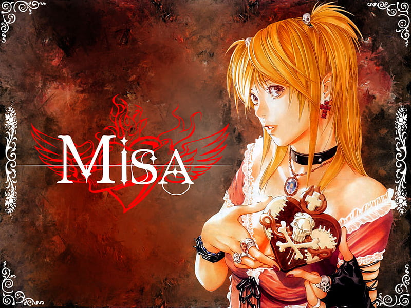

Misa Amane é uma personagem de Death Note. Ela é uma modelo e uma grande admiradora de Kira. Misa é conhecida por sua personalidade alegre, forte e determinada. Ela também possui os Olhos de Shinigami, que permitem ver o nome das pessoas e seu tempo de vida.
